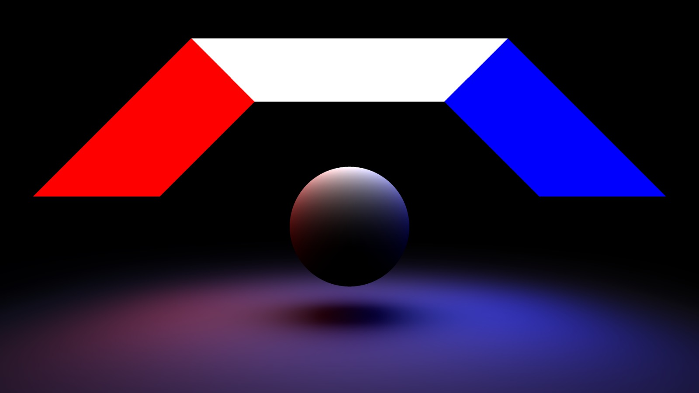
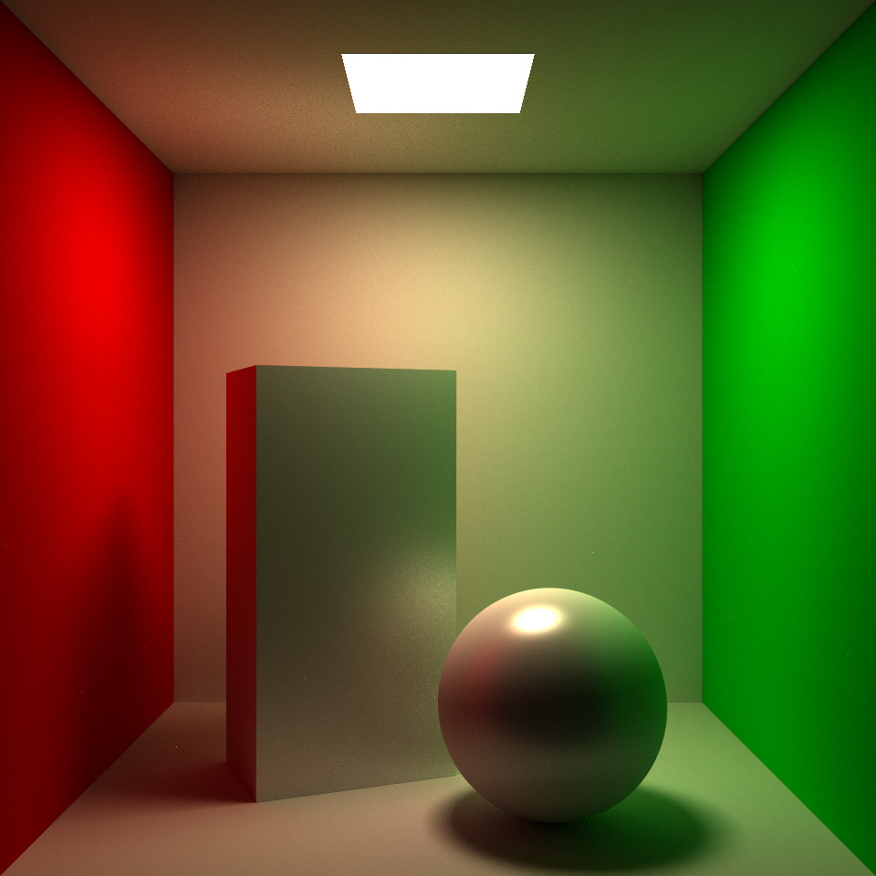
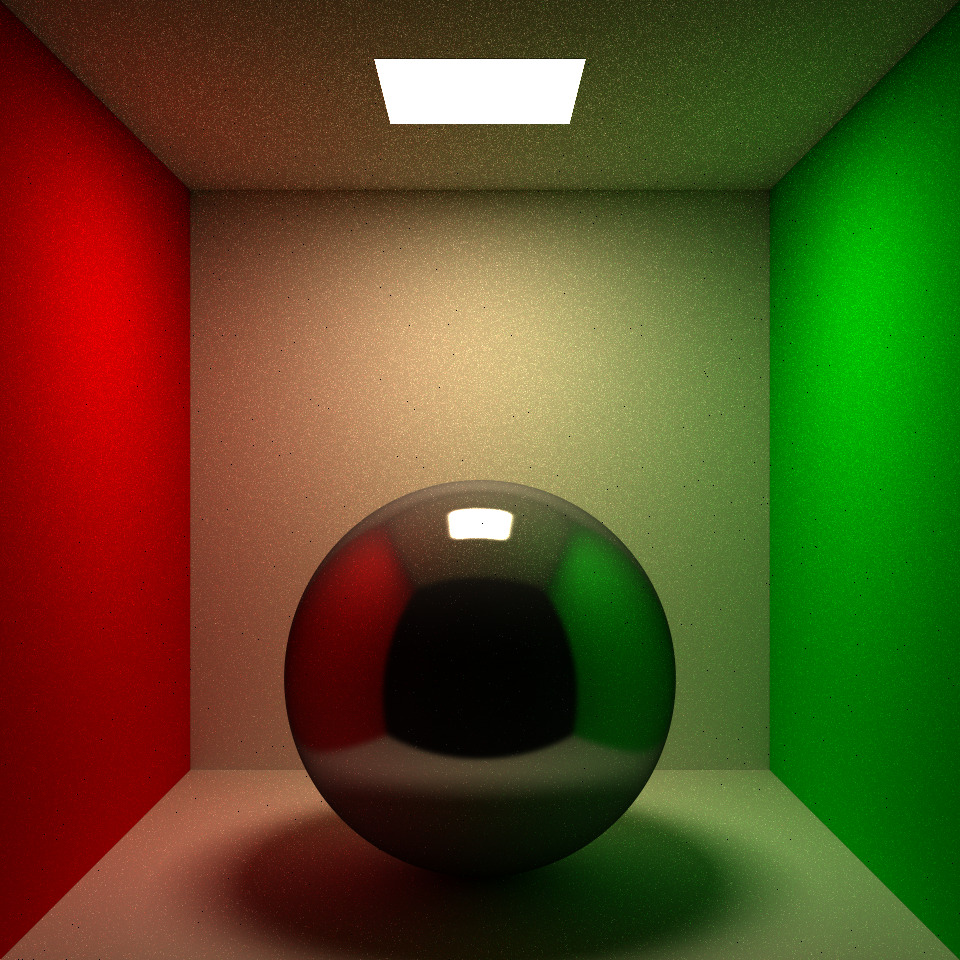

Hi!I am Ramit Goolry.
I am a recent graduate from the University of California - San Diego, with a BS in Computer Science. I am especially interested in Systems and Security, Machine Learning and Computer Graphics. I love to create algorithms to try to solve new and interesting problems. Check out some of my projects.
Other than coding, I also enjoy working out, listening to music and playing chess.
RayTracer / PathTracer
  "I developed a RayTracer and a PathTracer algorithm, with multiple features such as Monte-Carlo Integration and Multiple Importance Sampling for Denoising. The PathTracer is able to render images using the Phong BRDF model as well as the GGX Microfacet BRDF model. Implemented in C++ and Nvidia's OptiX SDK."
PokemonGAN
Developed a Deep Convolutional Generative Adversarial Network in PyTorch and trained it to generate new Pokemon. Implemented in Python and PyTorch.